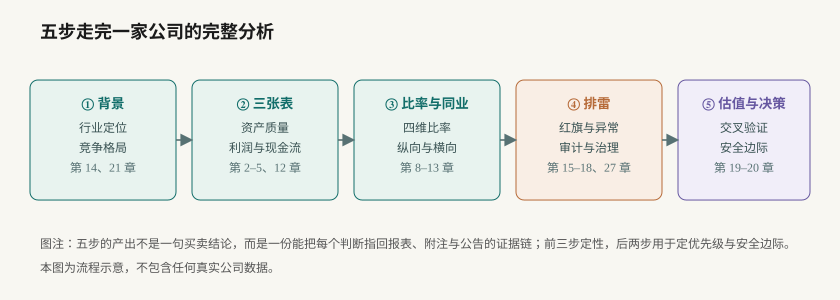
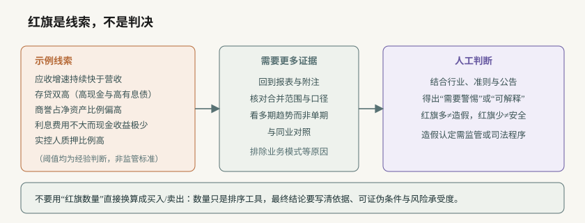

综合实战项目：把 28 章走成一份报告
这一个项目把前面 27 章的方法串成一条线：先理解行业与公司，再逐表检查，再做比率与同业对比，然后排雷，最后估值。它的交付物是一份能把每个判断指回证据的报告，而不是一句“买/卖”。
项目目标与交付物
本项目分析一家教学虚构的上市公司（不指向任何真实企业与真实财务数据）。你可以把同样框架套用到任何一家真实公司上，但要自己从年报与公告取证。

交付物建议包含四件东西：
- 事实层：封面基本盘——报告期、合并口径、单位与币种、数据来源与取数日期。
- 分析层：行业定位、三表检查、四维比率与同业对比，每个结论后面带数据出处。
- 风险层：红旗与异常清单，每项写明具体事项、可能解释与下一步要看的披露。
- 估值层：至少两种方法的交叉验证与敏感性区间，写明安全边际与关键假设。
时间上不必一次做完：定性部分（第一、二步）先出初稿，比率与估值（第三、五步）再迭代，排雷（第四步）随时可以插入。
第一步：行业与公司背景
不先理解行业，比率就只是数字。这一步回答三个问题：行业本身是好生意吗？公司在行业里处于什么位置？它的优势能不能持续？
- 行业生命周期：成长期看收入增速与市占率，成熟期看毛利率与现金流，衰退期看资产变现与偿债。不同阶段要用不同指标，不能混用。
- 竞争格局：可用波特五力（供应商、客户、新进入者、替代品、现有竞争者）逐一梳理，但五力是分析工具，不是强制步骤。
- 政策环境：行业是否受扶持或限制（如房地产、教育、新能源等），影响的是需求与合规成本，需引用当期规定而非旧闻。
- 公司层面：靠什么赚钱（卖产品/服务/授权）、竞争优势来源（品牌、技术、规模、网络、转换成本）、管理层历史行为与持股。
产出建议控制在 300–500 字，并写一句可证伪的判断，例如“若未来两年毛利率连续下滑且市占率下降，则该优势假设被推翻”。有了这句话，后面的数据才有检验对象。
第二步：三张表检查清单
资产负债表
- 总资产变化：增长来自经营、并购还是商誉，需分开看。
- 货币资金与有息负债：高现金与高有息债同时出现时，需问为什么不用现金还债（可能是受限、利率或蓄意安排）。
- 应收账款：增速与账龄结构是否与收入匹配；坏账准备是否充分。
- 存货：周转天数与跌价准备；是否存在“存货越存越值钱”。
- 商誉：占净资产与总资产的比例，及对应资产组的业绩。
利润表
- 收入增长：来自销量、单价、并购还是并表，口径是否可比。
- 毛利率：与同期、同业对比，并回到成本构成找原因。
- 期间费用：销售、管理、研发费用率的变化趋势。
- 非经常性损益与扣非净利润：区分一次性损益与主营盈利能力。
现金流量表
- 经营活动现金流：是否持续为正，与净利润的差距在哪里（详见第 12 章）。
- 自由现金流（经营现金流 − 资本支出）：是行业常见的简化口径，是否持续为正。
- 筹资活动现金流：公司在持续融资还是持续还钱，融资用途与成本是什么。
提醒：“净现比高于 0.7 为及格”“非经常性损益超过 20% 就含金量不足”之类都是经验阈值，不是准则或监管标准。本页保留它们作为线索，但判断必须回到具体原因与多期趋势。
第三步：比率与同业对比
把比率分成四个维度：盈利、偿债、营运、成长。每个比率都要先定口径（分子与分母、期间、合并范围、单位），否则横向比较没有意义。
| 维度 | 代表指标 | 口径要点 |
|---|---|---|
| 盈利能力 | 毛利率、净利率、ROA、ROE | ROE 用平均权益；负权益时比率失效 |
| 偿债能力 | 流动比率、速动比率、利息保障倍数 | 分子需扣除受限资产与不能变现的项目 |
| 营运能力 | 应收/存货/应付周转天数、现金转换周期 | 分子用同期间平均余额，分母口径要对应 |
| 成长能力 | 营收与利润增速、扣非增速、可持续增长率 | 区分有机增长与并表贡献 |
比较要同时做两件事：纵向（公司自己过去 3–5 年）与横向（同业对照）。做同业对比时，先把口径差异（含少数股东权益、租赁处理、合并范围）拉平，再比比值；否则是在比会计处理。
雷达图可以把四个维度可视化，但不要把主观评分当成客观指标——分数只能用来排序与发现异常，与第 13 章的综合评分一样，需声明权重来源。
第四步：排雷检查
这一步的目标是把可疑点排成优先级，而不是给出一句“买/卖”。下面是一组常用线索（参考第 15–18、27 章）：
- M-Score 高于原论文阈值（提示盈余管理特征，不是定性认定）。
- Z-Score 低于阈值或连续多期下降（困境风险趋势）。
- 净现比长期偏低（利润与现金长期背离）。
- 商誉占净资产比例偏高，且对应资产组业绩下滑。
- 应收增速持续快于营收增速，或账龄结构恶化。
- 非标准审计意见，或审计师在年报披露前夕变更。
- 实控人质押比例偏高，或存在资金占用、违规担保。
- 关联交易占比高且定价特殊。
- 扣除非经常性损益后连续亏损（主业不赚钱）。
- 存贷双高（大额货币资金与大额有息负债并存）。

因此，不要用“红旗几个就安全/几个就放弃”的固定换算。正确做法是：每个红旗写清具体事项、可能解释、下一步要看的披露；解释不成立时才升级为风险。行业与业务模式会直接影响哪些信号有效，例如高杠杆经营、结算周期长的行业天然会拉低净现比。
第五步：估值与决策
用至少两种方法交叉验证，而不是只拿一个数字下结论：
- 绝对估值（DCF）：写清白自现金流口径、折现率与永续增长率，并给出敏感性区间（详见第 19 章）。DCF 的输出是区间，不是目标价。
- 相对估值（PE/PB/PS、EV/EBITDA）：与公司历史分位与同业对比，先确认口径可比（详见第 20 章）。
- 股东回报：分红是否持续、股息率与无风险利率的关系，以及分红背后的现金流是否可持续。
把三者放在一起，看的不是“哪个数字最高”，而是它们是否指向同一个区间；若分歧很大，应回到假设，看是哪一条假设导致了分歧。
关于“安全边际”：它等于你估算的价值与价格之间的折扣，而估算价值本身是区间。把“安全边际 > 20% 就买”当成机械规则是危险的；更重要的是写下“如果我的假设错了，会错在哪里、会亏多少”。
本页不提供任何买入/卖出评级或目标价。估值与仓位是个人风险偏好与资金约束的结果，请自行判断并对结果负责。
现金流质量速查工作台
默认演示（经营现金流 12、净利润 10、资本支出 4、营业收入 100、总资产 200，单位一致）可手工复算：净现比 = 1.20，自由现金流 = 8，FCF/营收 = 8%，经营现金流/总资产 = 6%。
四个比率一次算清
五个金额需同一期间、同一口径与同一单位；自由现金流采用“经营现金流 − 资本支出”的简化定义。
这四个比率只是起点：净现比偏低可能来自行业结算周期、也可能是回款问题，需回到第 12 章的桥接与附注逐项核对，不要把它当成单一的健康评分。
自测与下一步
报告开头先写清报告期、合并口径、单位与币种、数据来源与取数日期。
每个结论后跟上数据出处（报表行次或附注编号）。
写至少一条可证伪的判断，并说明它何时会被推翻。
红旗只定优先级，逐条写“具体事项 / 可能解释 / 下一步看什么”。
估值用两种以上方法交叉验证，并给出敏感性区间。
自测一：五个比率都很漂亮，是否可以省掉排雷？
不可以。比率好坏只看经营表现，而排雷关注的是“数字本身是否可信”。若存在收入提前确认、费用资本化或存贷双高等情况，好看的比率可能正是需要核实的地方。
自测二：做完五步后结论和最初直觉相反，该怎么办？
这正是项目的价值。回头检查是哪一步的数据或假设推翻了直觉，并把这段推理写进报告——分析的目的不是确认已有看法，而是检验它。
下一步建议：用同一框架分析一家你熟悉的真实公司，先从小范围开始（如先做第二、三步），逐步补齐行业背景与估值；每份报告都写下数据来源与日期，方便日后回顾。
依据与边界
本页所有数字与图例均为教学示意，不指向任何真实公司，也不构成投资建议。五项红旗阈值、评分权重与安全边际比例均为分析者采用的经验判断，不是会计准则或监管标准。
具体指标的定义与列报以财政部《企业会计准则》（含现金流量表、财务报表列报等相关准则，以最新版本为准）为准；审计意见与关键审计事项以中国注册会计师审计准则为准；上市公司披露要求以证监会与交易所现行规定为准。